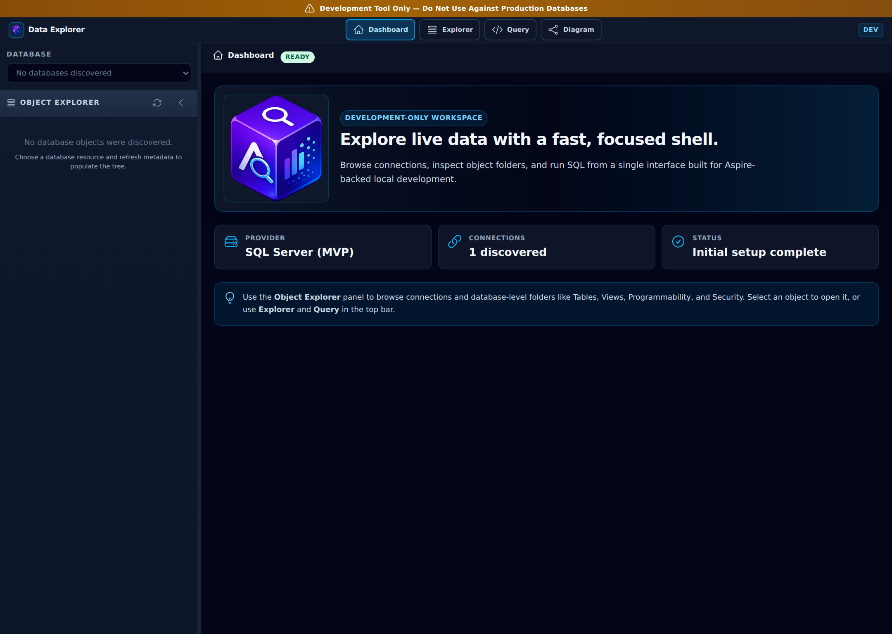
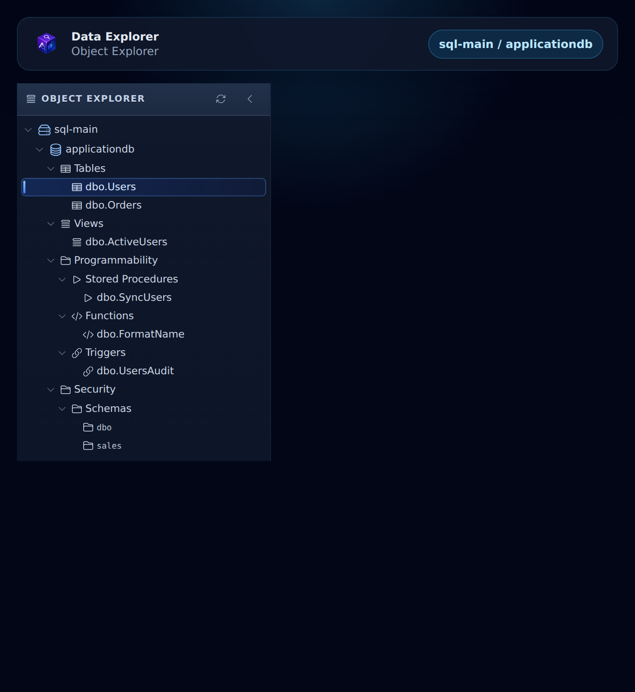
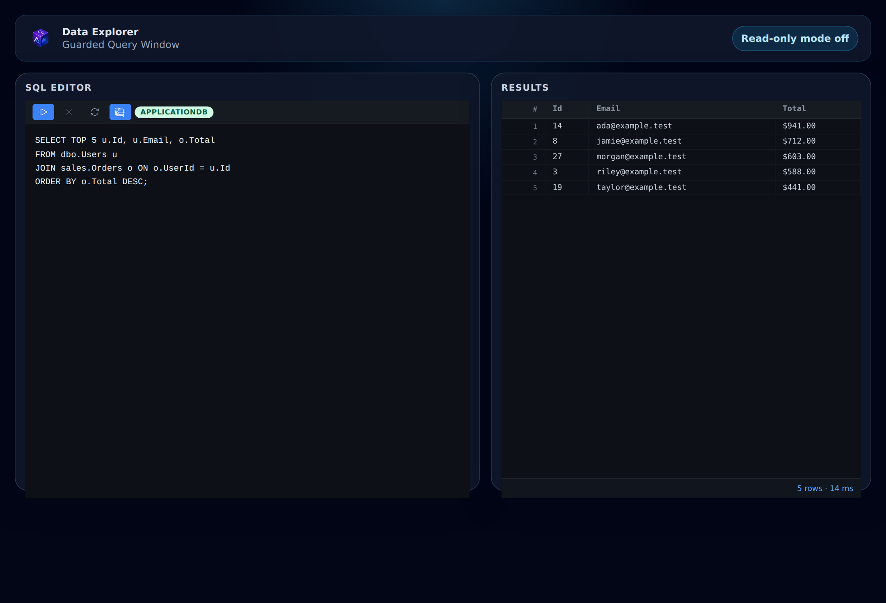
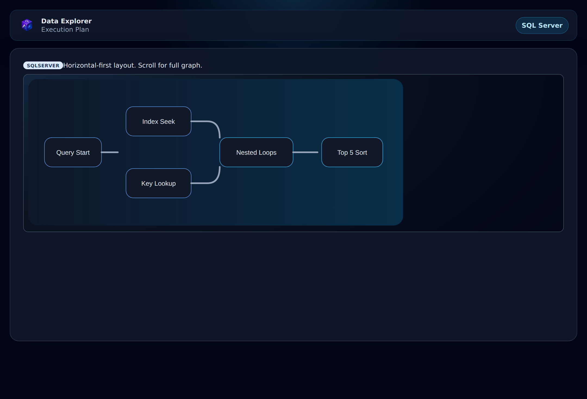
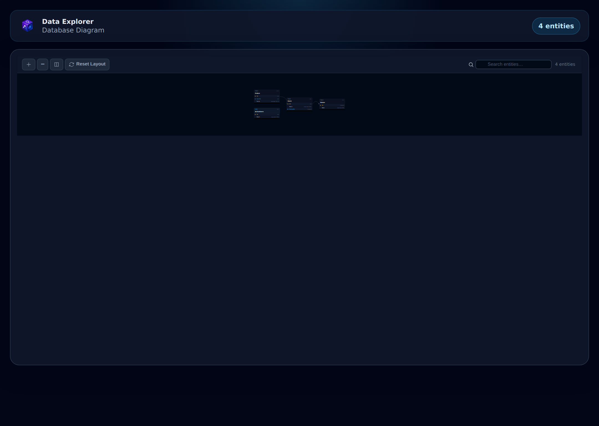

Object Explorer
Browse schemas, tables, views, procedures, functions, triggers, indexes, and definitions through a compact tree built for database-first debugging.
Development-time only • SQL Server-first MVP
OakIdeas.Aspire.DataExplorer adds a focused, polished database workspace to .NET Aspire: discover local resources, inspect schema metadata, open object details, and run guarded SQL queries with diagnostics and execution-plan support.

What it is
Data Explorer keeps schema exploration and SQL troubleshooting inside the same development loop as the rest of your Aspire app. Instead of reconstructing connection details in external tools, contributors can inspect live local databases directly from a purpose-built UI.
The project is intentionally development-only. Runtime and hosting guards help keep the tool out of production scenarios, while provider-specific SQL and error mapping stay isolated in provider projects.
Why it exists
Browse schemas, tables, views, procedures, functions, triggers, indexes, and definitions through a compact tree built for database-first debugging.
Run ad-hoc SQL with row limits, timeout controls, optional read-only mode, destructive-query confirmation, and user-visible recovery guidance.
Visualize execution plans when supported and inspect entity relationships through an interactive database diagram surface.
Shared layers define contracts and orchestration, while providers own SQL, capability-specific discovery, and exception mapping.
Screenshots




Getting started
dotnet restore
dotnet build OakIdeas.Aspire.DataExplorer.sln
dotnet test OakIdeas.Aspire.DataExplorer.sln
dotnet run --project src/OakIdeas.Aspire.DataExplorer.AppHostYou can also run samples/OakIdeas.Aspire.DataExplorer.Sample.AppHost to validate a consumer-style setup.
Use the public docs as the source of truth for setup, architecture, samples, and troubleshooting.
Open docsReview package guidance, versioning expectations, and publishing workflows for preview and stable builds.
Package infoRead the contributor guide before proposing changes, especially for provider isolation and development-only boundaries.
Contribution guideThe project is released under the MIT License.
View license